Your connection dashboard
See contacts, places, links, Collections, and quick actions in one calm, useful Home view.
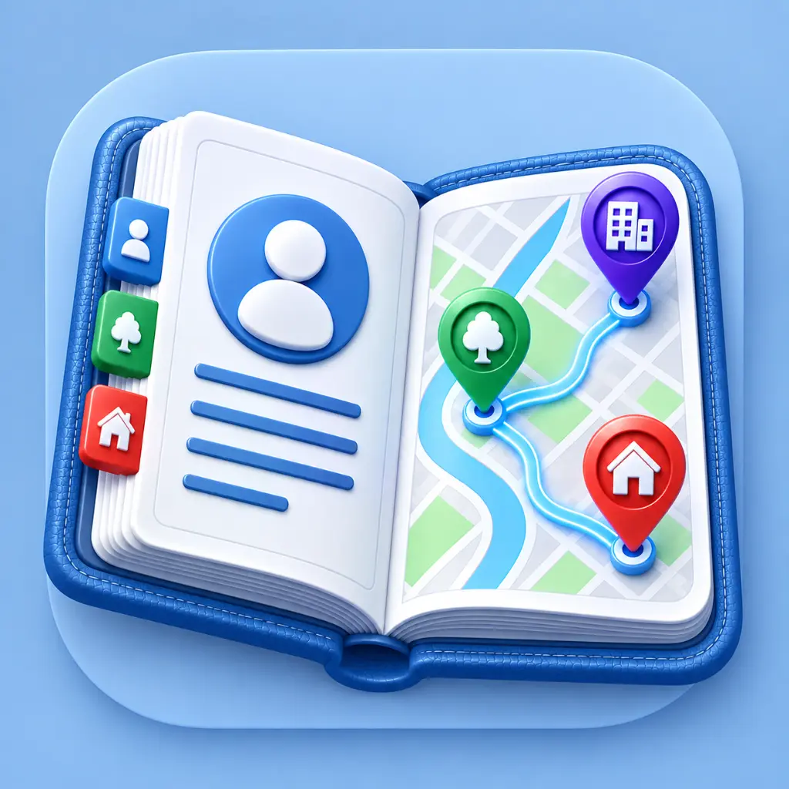
Contact LinksBring people, places, links, and the plans they belong to into one beautiful space. Contact Links keeps every meaningful connection close at hand.
Designed for iPhone · Available now on the App Store · support@contactlinks.in
ONE PLACE FOR YOUR CONNECTIONS
Contact Links gives every contact useful context—and gives every plan a home for its places, links, and details.
See contacts, places, links, Collections, and quick actions in one calm, useful Home view.
Search, filter, and browse your iPhone contacts with their locations and links at a glance.
Use the built-in dialer or call, message, and WhatsApp a contact directly from their details.
Gather the places, links, and notes for a trip, event, project, or favorite routine in one focused view.
Attach meaningful places—Home, Office, cafés, or meeting points—to people and Collections.
See saved locations on a map, sort them by distance, and choose Apple Maps or Google Maps for shared links.
Find matches by phone number or exact name, select the contacts you want, and merge with confidence.
Review a backup before importing contacts, locations, quick links, and Collections on your terms.
Keep encrypted backups of your contacts, places, links, and Collections on this iPhone or in Files.
SEE IT IN ACTION
Scroll through the people, places, links, and Collections that keep every plan moving.
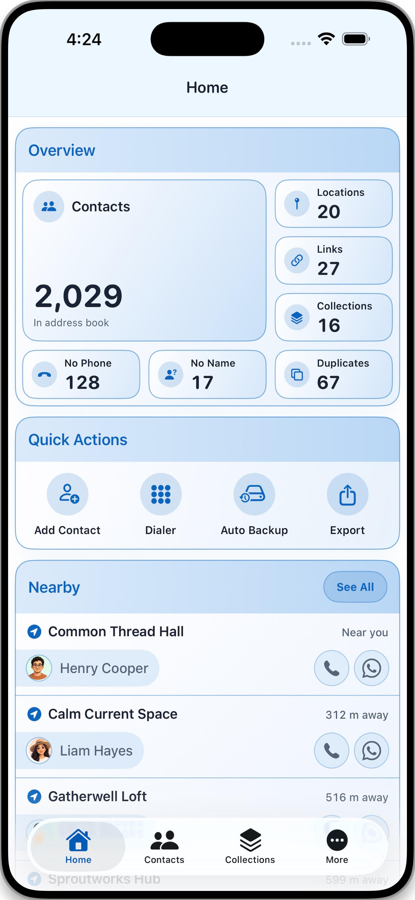
01 — HOME
Start with a useful snapshot of your world: contacts, places, links, Collections, quick actions, and nearby people—all together when you need them.
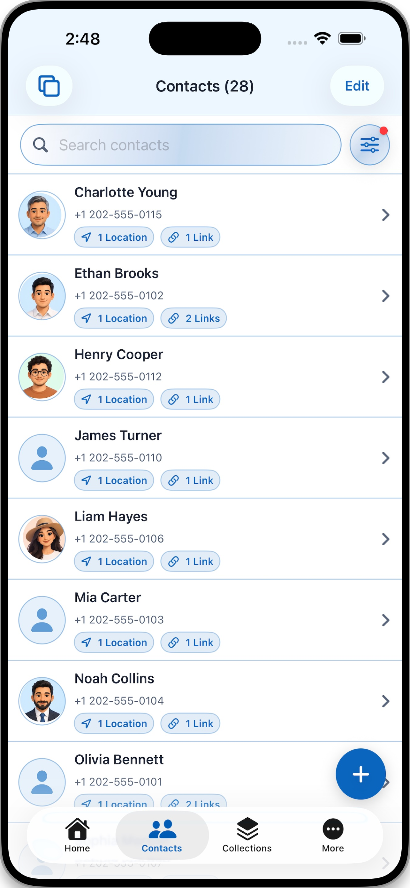
02 — PEOPLE
Search your address book, filter it your way, and see the saved places and links connected to every person before you even open their details.
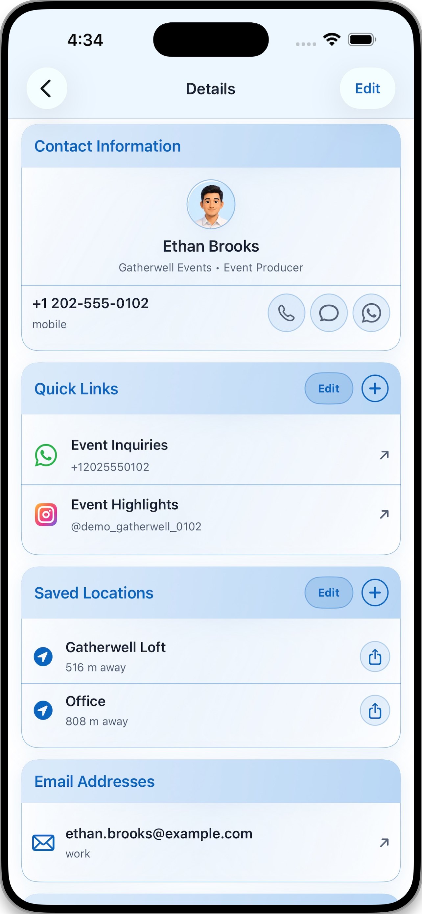
03 — CONTACT DETAILS
Keep contact methods, quick links, saved places, and email addresses in one place. When it’s time to reach out, call, text, or open WhatsApp in one tap.
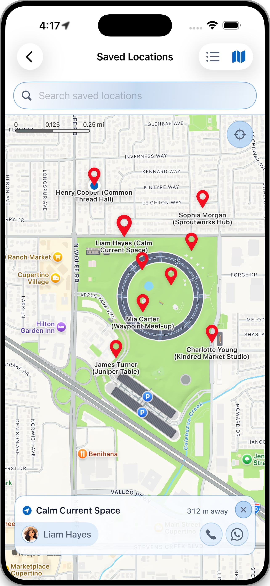
04 — PLACES
Keep meaningful locations with the people they belong to. Explore them on a map, find what is nearby, and call, message, or get directions without losing your place.
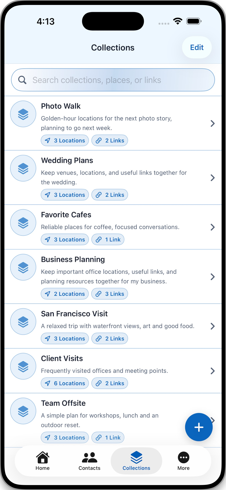
05 — COLLECTIONS
Gather the places, links, and details for a trip, event, project, favorite routine, or anything else you want to keep in focus.
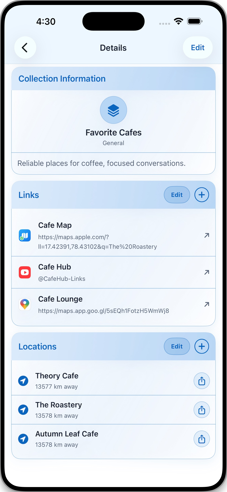
06 — COLLECTION DETAILS
Open a Collection to see its links, locations, and notes together. Add what you need, edit as plans change, and share a location when it is time to go.
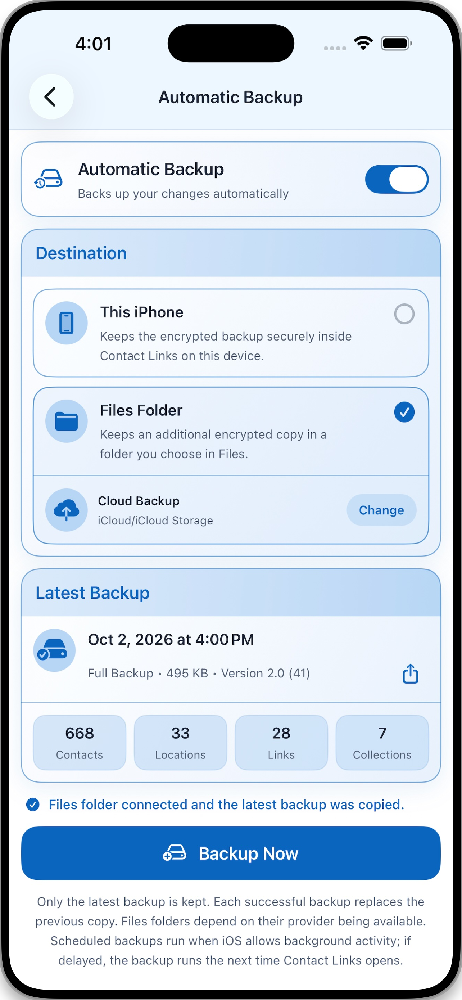
07 — AUTOMATIC BACKUP
Protect your latest changes automatically. Keep an encrypted backup on this iPhone, or add an encrypted copy in a Files folder you choose—complete with Collections.
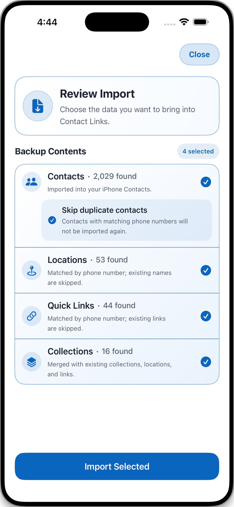
08 — IMPORT
Review a backup before it changes your phone. Choose which contacts, locations, quick links, and Collections to bring in, while skipping duplicate contact data.
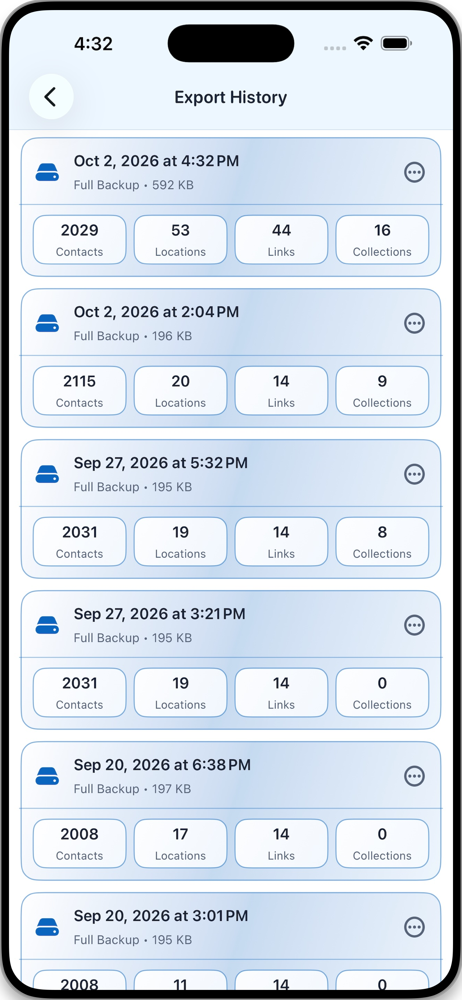
09 — EXPORT HISTORY
Review previous full backups at a glance. Every export makes its contents clear, including your contacts, locations, links, and Collections.
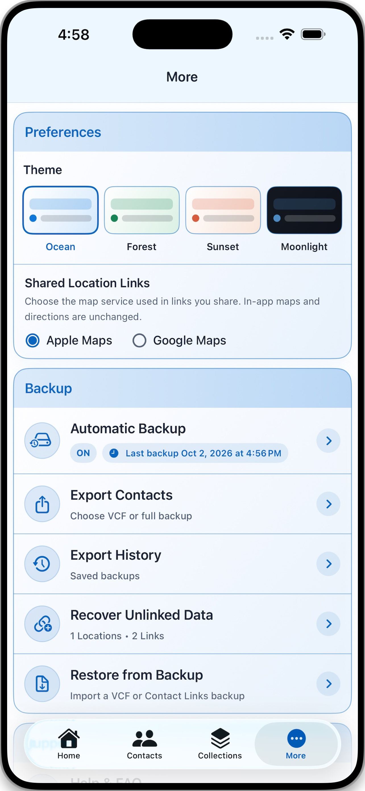
10 — YOUR WAY
Make Contact Links feel at home on your iPhone. Choose a theme, select Apple Maps or Google Maps for shared locations, and manage your backups from one place.
CONTACT LINKS
One app for the people you know, the places that matter, and the actions you use most.
SUPPORT
We're here to help with setup, backups, imports and anything else related to Contact Links.